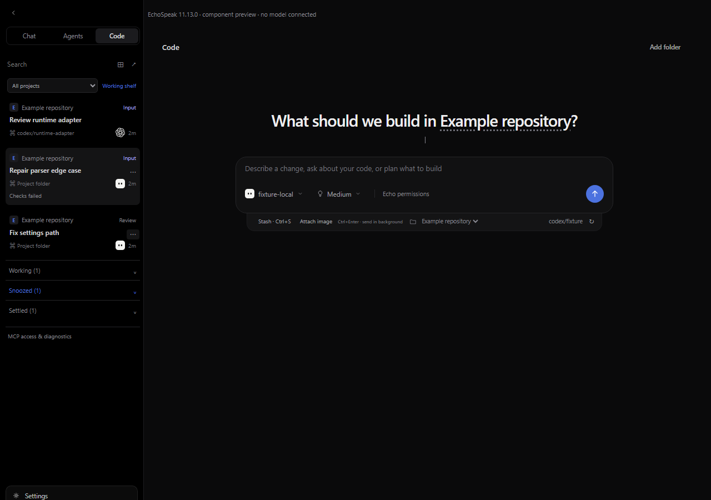
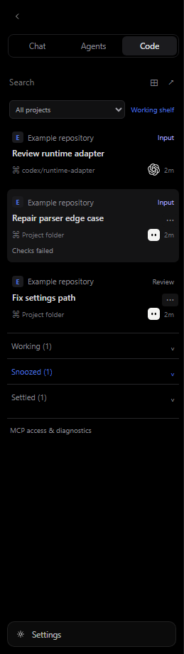
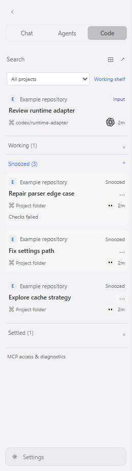

EchoSpeak 11.13.0 / A focused inbox for parallel coding
30 October 2026 UTC · PR #114, stacked on #113 · local test installers · no public release
Keep active work in view. Put running, deferred and settled threads where they belong.
This report accompanies the 11.13.0 PR and local installer. Screenshots use real components with deterministic API fixtures. They do not establish installed-app or live-provider acceptance.
Our workflow stays in place
The inbox is on the left

Parking and parallel work
Timed snooze, settle/wake, Ctrl/Cmd-click and Shift range selection. Ctrl/Cmd+Enter submits native work through the existing query and queue. Vendor worktrees retain their isolation.
Prompts and images
Ctrl/Cmd+S stores a stash at the top of the sidebar. Bounded verified images stay in the trusted project. Local OpenAI and Claude marks follow the theme.
Dark and light sidebar evidence


PR auto-settlement requires an explicit link, unchanged activity and HEAD, a clean checkout, idle review state and confirmed merge. It performs no merge. Snooze expiry changes presentation only, never execution.
Optional local control and measured observations
MCP access
Separate expiring, revocable project/agent grants. Read only by default; explicit control. Existing harness permissions remain. Local stdio only; no remote/mobile OAuth system.
Usage
Actual runtime-reported tokens, costs, scope and time. Available account limits remain separate. Missing quota is unavailable; no subscription bill estimates.
Triage
Local versions, runtime state and CPU/memory observations. No prompts, conversations, credentials, paths, raw logs or upload in the export.
Full T3 parity is not claimed. Native worktree isolation, title regeneration, comprehensive PR/CI workflows, durable background admission recovery and remote/mobile control remain future work. See the linked technical record for boundaries.
Verification and delivery
57 backend tests, 35 web tests, 16 desktop source contracts, TypeScript, production web build and wide/narrow browser checks passed. Compiled API version/auth and MCP stdio checks passed without model prompts. EXE and MSI were produced and both report 11.13.0; updater signing failed because the encrypted key password was unavailable in this noninteractive run. Local test installers and their hashes are retained; no updater signatures or public release were produced.
Owner acceptance remains separate: live model/account behavior, vendor quota, approval/stop/reconnect, real merged PRs and the installed Windows layout.
Try the local installer
Open the retained local test installer at release/v11.13.0/EchoSpeak_11.13.0_x64-setup.exe. Exact PowerShell commands, checks and provenance are in the paired release notes. Nothing is automatically installed, merged or published.